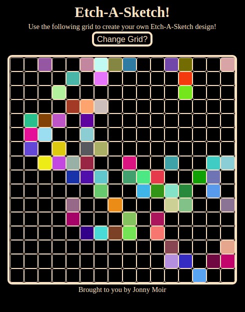
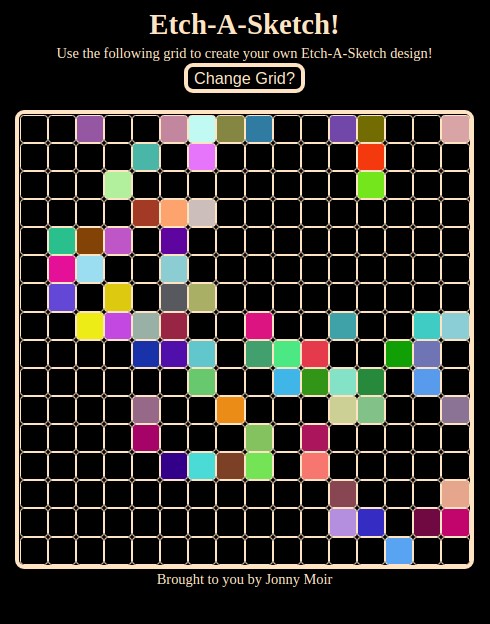

Etch-A-Sketch Project
 

Intro
This project was another task given from the Odin Project. The project required that a 16x16 grid be displayed on loading and the user could change the colors of cells by hovering their mouse over them. Another requirement, was that the user could change the number of cells in the grid without changing the outer boundaries of the grid. Additionally, as a bonus challenge, I had to find a way for the colors to be randomized. As far as the design went, I kept things simple as I am currently focused on honing my JS skills. I also chose to make the grid smaller to fit better on smaller screens; however, I did not choose to make the grid responsive. Unfortunately, I did not code for touch-screen users either.
GitHub Code
Here is a link to the code for this project
(Just click on the GitHub logo)

Go Live!
Check out the site here!I have also loaded a site preview below: